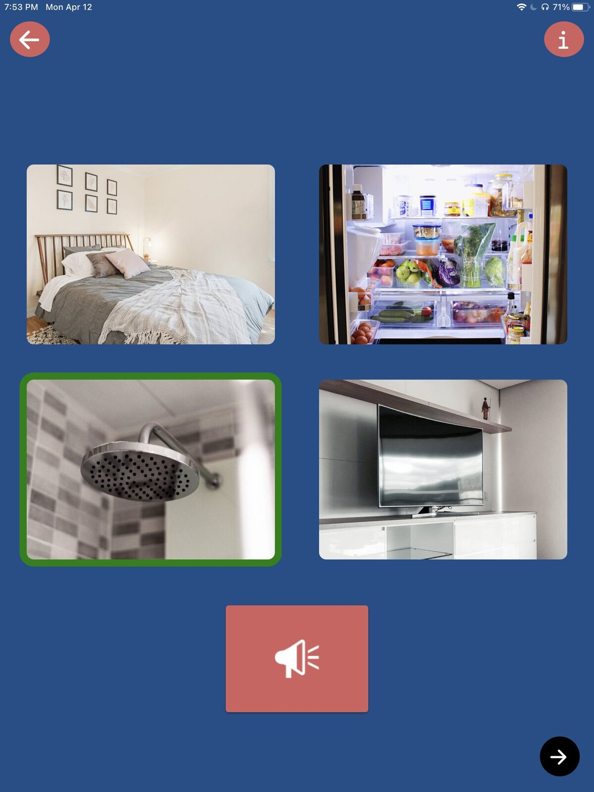
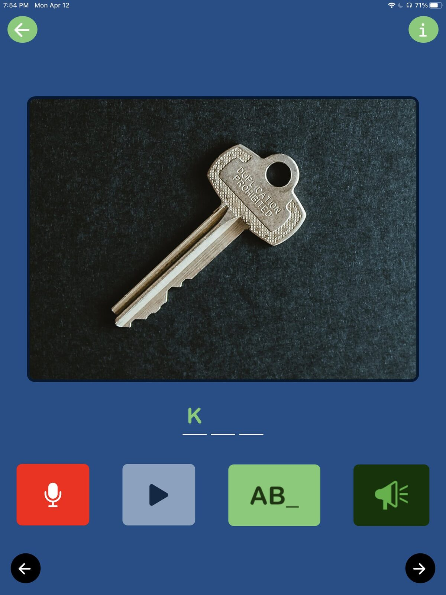
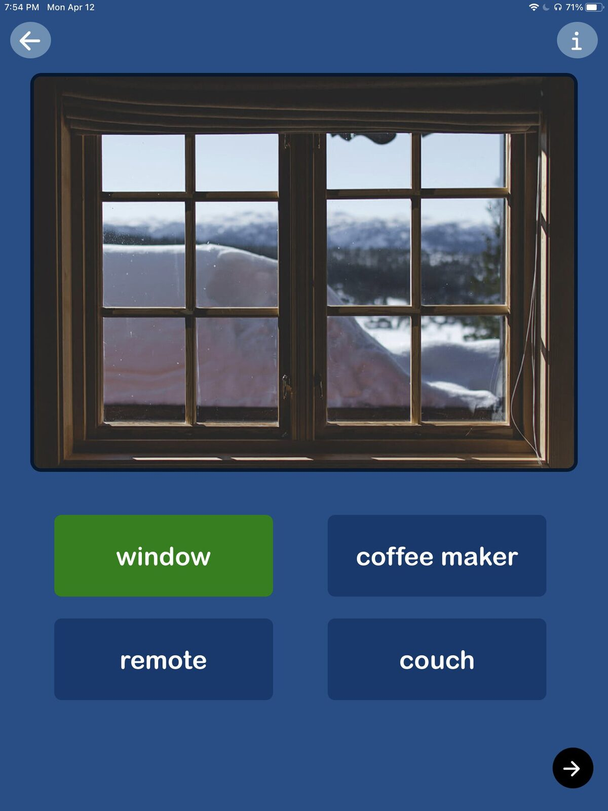
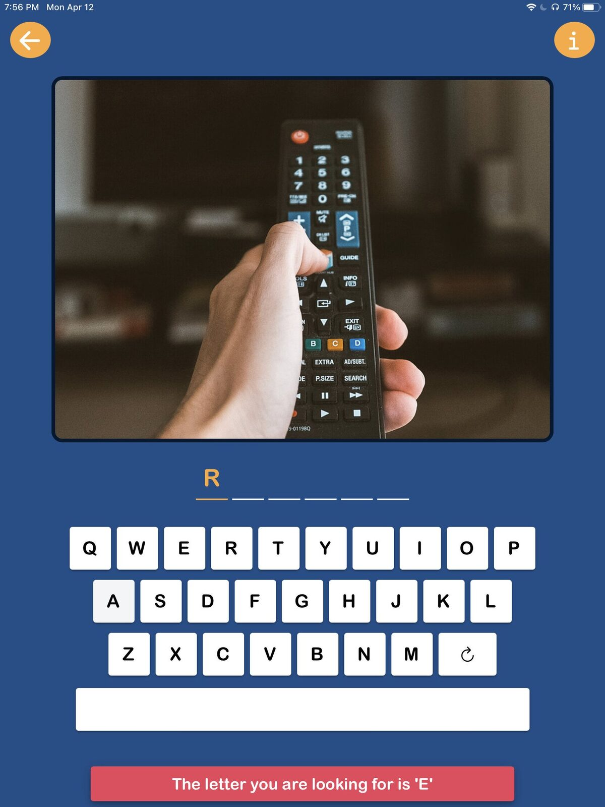
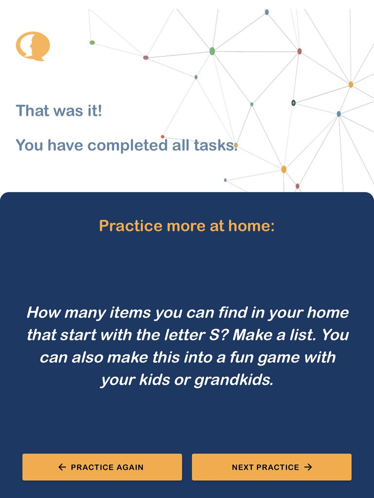

We are delighted to announce the arrival of our app for independent home practice for people with acquired speech and language challenges!
With Sanapsis+, patients can work at their own pace on word-level exercises at home. We have put a lot of effort and thought into bringing you a user-friendly app with relevant content for your patient to work with - but without restricting the user experience to a one-dimensional game-like experience.
Every step of using Sanapsis+ has been designed with the needs of our patients in mind. We have created an open-ended experience for users to stay in control while still providing feedback on their work. There are four different exercises in Sanapsis+.
Listening

These exercises help your patient to identify the single words they hear. There are four images on the screen. After a brief pause, the app names one of the images. The goal is to tap the image that corresponds to that word. If the answer is correct, a green frame appears around the image. If the answer is incorrect, a red frame appears around the image. Simple! Patients can listen to the target word again by tapping the megaphone button. When they tap any of the pictures, they hear the name of that picture.
Speaking

In this exercise, patients work on word recall and speaking by naming pictures they see on screen. They also record and listen to their own voice and speech. No feedback is provided in this exercise as patients get to evaluate their work themselves!
There are multiple levels of clues embedded in the exercise. To listen to the whole word recording of the target word, patients can tap the image. They can tap the question mark for a written clue to see the letters revealed - one letter for each tap. For an auditive hint, patients can tap the megaphone icon. All words can be recorded as many times as needed before moving to the next one.
Reading

In this reading exercise, there is an image and four words on the screen. Patients read the words and tap on the one that corresponds to the image. When the answer is correct, the button turns green. If they tap the wrong word, it turns red. It is always possible to try again as many times as needed, no rush! Patients can listen to the names of all images by tapping them.
Writing

In the writing exercise, there is an image and a keyboard on the screen. The goal is to use the keyboard to type the name of the image. When correct letters are typed, they appear on the line. After two incorrect tries, a hint appears, showing the following letter. When the word is completed correctly, the background turns green. It is possible to write the word again by tapping the refresh button on the keyboard.
In all exercises, patients move forward at their own pace by tapping the arrow in the right corner. They can also go back to the previous word by tapping the back arrow on the left.
Saving the best for last!
After the last task in an exercise, you see our most favorite feature! On the final screen, patients see an idea of how to practice the same skills they just worked on in the app in their everyday environment. These ideas correspond to the skill patients worked on and the category they chose to use for this particular session.
Ideas for working outside the app range from simple independent work at home (reading, home: Browse through a newspaper. How many ads can you find?), to getting out and about (reading, surroundings: "Pay attention to street signs in your community. Which words do you recognize?"), and to work around the house with a loved one ("naming, clothes: Next time you do the laundry, name all the items as you put them in the dryer or as you hang them up to dry. Take turns!").
We are super excited about this feature and hope you are too! After all, the real world is where the magic of communication happens! We are also looking forward to hearing your best tips and ideas on working on language skills in the everyday environment. Send us your idea and it might be featured in the app!
